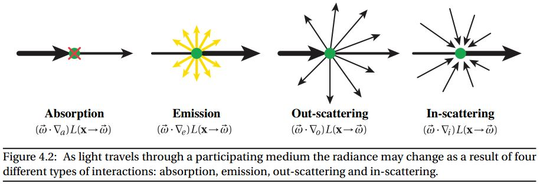
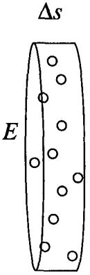
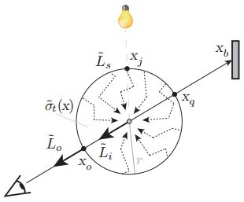
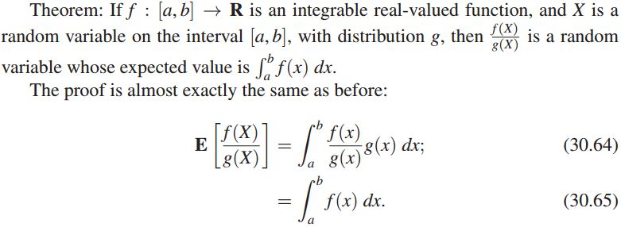
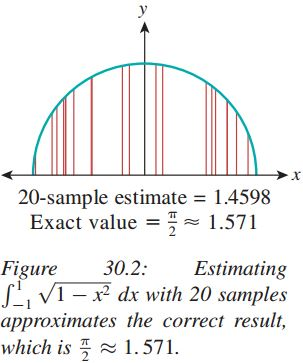
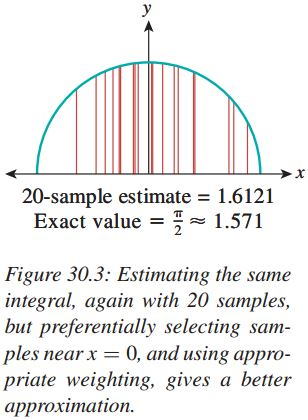
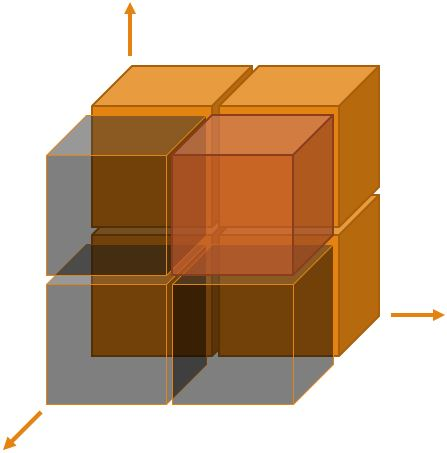

A Note of Ambient Volume Scattering
This is a study note written by Dapeng XU. As an web page, it will update any time when I have a new thought about it.
Abstract
Small preintegration table 是如何做到small的？
Background
We are doing volume rendering by the global illumination and the Monte Carlo approach.
1 Introduction
DVR emission and absorption[32]
Shadow-based volume rendering 更好
We show how directional soft shadows can be combined with indirect lighting from multiple scattering.
什么是单一的散射？（single-scattering）相比于多散射（multiple scattering）
3 Volumetric Illumination
3.1 Global Light Transfer
Four kinds of light interaction at a particle:

So the relationship in the extinction coefficient, the absorption coefficient, and the scattering coefficient can be easily gotten.
The extinction coefficient, $\sigma_t(x’)$, is the sum of the absorption coefficient $\sigma_a$ and the scattering coefficient $\sigma_s$. $$ \sigma_t = \sigma_s + \sigma_a, \quad \sigma_t = \frac{N\pi r^2}{E\cdot \Delta s} $$ $\sigma_t(x’)$ is also the projection area of all the particulars in the unit volume.

The meanings of these coefficients is that, for example, for a small cylinder with length $\Delta x$ , the number of absorbed particles is about $$\sigma_a(x)\cdot\Delta x$$ $L_m(x, \omega)$ is the source radiance of the medium, which can be integrated along the view ray: $$L_m(x,\omega)=\frac{\sigma_a}{\sigma_s + \sigma_a}L_e(x,\omega)+\frac{\sigma_s}{\sigma_s + \sigma_a} L_i(x,\omega)$$ $L_e$ – emissive light(A known parameter from the input data), $L_i$ – in-scattered light can be given by $$L_i(x,\omega)=\frac1{4\pi}\int_\Omega P(\omega',\omega)L(x,\omega')d\omega'$$ where $\Omega$ is the solid angle, $P(\omega',\omega)/4\pi$ is the phase function.
Where T is the transmittance item: $$T(x_1,x_2)=e^{-\int_{x_1}^{x_2}\sigma_t(x')dx'}$$ It represents the attenuation between the point x1 and x2, obviously we have $$\int_{x_1}^{x_2}\sigma_t(x')dx'>0,\quad 0 < T(x_1,x_2)<1$$ In a computing task, $x$, $x_b$ and $\omega$ is what we have already known. $L_b(x_b, \omega)$ is gotten from the last step or the boundary conditions. Therefore, for the rendering equation, $\sigma_t$ and $L_m$ are still unknown.
3.2 Ambient Light Transfer (Observe first)
Combine these formulas, we have: $$\begin{align}L(x,\omega)&=e^{-\int_{x_b}^x\sigma_t(x')dx'}L_b(x_b,\omega)\\&+\int_{x_b}^xe^{-\int_{x'}^x \sigma_t(x')dx'}\sigma_t(x')\left[\frac{\sigma_a}{\sigma_t}L_e(x,\omega) +\frac{\sigma_s}{4\pi\sigma_t}\int_\Omega P(\omega',\omega)L(x,\omega')d\omega' \right]dx'\end{align}$$
1. It is difficult to get $L(x, \omega)$, since it appears at both sides.
2. We need to integrate over the entire sphere of directions….(Is there a method to avoid it?)
3. Phase function $P(\omega’, \omega)$ and coefficients $\sigma_t$, $\sigma_s$, and $\sigma_a$ are either unknown or complicated to compute. (Possible to compute accurately, or necessary to find a substitution? )
3.2.1 Ambient Scattering (Some Approximating Strategies)

The spatial distribution of the extinction coefficient inside the sphere does not heavily influence the result. The average of extinction coefficient is enough: $$\sigma_t(x)\rightarrow\widetilde{\sigma}_t=\frac3{4\pi r^3}\int_V\sigma_t(x')dV, \quad x'\in V$$ For a spherical region, the outgoing radiance $L_o(x_o, \omega_o)$ is described by: $$\widetilde{L}_o(x_o,\omega_o)=\widetilde{T}(x_q,x_o)\widetilde{L}_s(x_q,\omega_o)+\int_{x_q}^{x_o} \widetilde{T}(x',x_o)\widetilde{\sigma}_t(x')\widetilde{L}_m(x',\omega_o)dx'$$
3.2.2 Soft Shadows with Tube Marching

4.1.1 The Parameter Space
Free parameters: $r, \, \widetilde{\sigma}_t, \,P,\,\widetilde{L}_s,\,\theta $
The radius r can be merged into $\sigma_t$: $$r\cdot\widetilde{\sigma}_t\rightarrow\widetilde{\sigma}_t'$$ $L_s(x_s,\omega)$ can be computed by: $$\begin{align}\widetilde{L}_s(x_s,\omega)&=\frac1{4\pi}\int_{\Omega}P(\omega',\omega)\widetilde{L}(x_s,\omega)d\omega'\\ &=\frac1{4\pi}\widetilde{L}(x_f,\omega)T(x_1,x_2)\int_{\Omega}P(\omega',\omega)d\omega'\\ &=\frac1{4\pi}e^{-d\cdot\widetilde{\sigma}_t}\widetilde{L}(x_f,\omega)\int_{\Omega}P(\omega',\omega)d\omega'\\ &\stackrel{?}{=}\frac1{4\pi}e^{-d\cdot\widetilde{\sigma}_t}\widetilde{L}(x_f,\omega)\cdot P_{HG} (\arccos(\omega\cdot\omega_z),g) \end{align}$$ Now, the number of free parameters is only three: $\widetilde{\sigma}_t, \,P,\,\theta$
Phase Function
In this paper, the author employ the Henyey-Greenstein(HG) phase function. This function can be found in [L.Henye y and J. Greenstein] Diffuse radiation in the galaxy. It is very doubtable that for any kinds of volume data we can always get a great phase function with some symmetry. $$P_{HG}(\alpha,g)=\frac{1-g^2}{(1+g^2-2g\cos\alpha)^\frac32}$$ Where g is the anisotropy parameter.
May 16th: Now the question is solved when reading Wojciech Jarosz’s Ph.D. It says:...........
4.1.2 Volumetric Path Tracing
Importance Sampling

Suppose that the function $g$ is larger where $f$ gets larger, and smaller where $f$ gets smaller, etc., albeit not in exact proportion. Then the variance of the weighted-sampling estimator is lower than that of the uniform sampling approach. The use of such a function g is known as importance sampling

4.2.1 Ambient Extinction Volume
Discretize the sphere so we will get: $$\widetilde{\sigma}_t(x)\approx\frac1{V_s}\sum_{i=1}^m\sigma_t(x_i')\Delta V,\quad x_i'\in \text{sphere with a center }x $$ In order to use the summed area tables, we approximate the sphere $S_r(x)$ with a cube $C_r(x)$ of volume $V_s$ and we get: $$ \widetilde{\sigma}_t(x)\approx\frac1{V_s}\text{SAT}(C_r(x)) $$ But if we reform the formula to this form, with no sum notation, it seems we have to use only one cube to approximate the sphere. What if we use multiple cubes to approximate the sphere?
Summed-Area Tables(SAT) in 3D space

1. Use one summed-area table for each plane, and all of them will form the ability to cache the sum of the data, but the number of the cache data we need to access is as many as the diameter of the sphere.
2. Another method to use the SAT, is to apply its idea in 3D space. The result, giving the volume of the red cube in the figure, is the following formula: $$ \begin{align}V_{111}&=S_{111}-S_{110}-S_{101}-S_{001}\\&+S_{100}+S_{010}+S_{001}-S_{000}\end{align} $$ SAT method performed well in practice, as the author say in this paper.